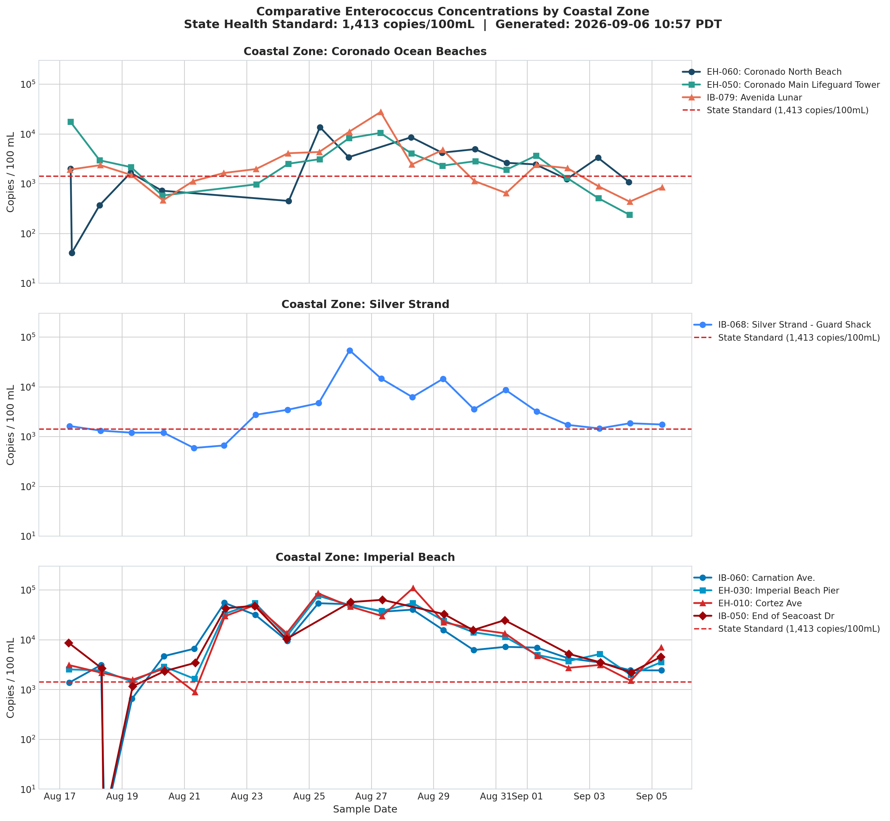
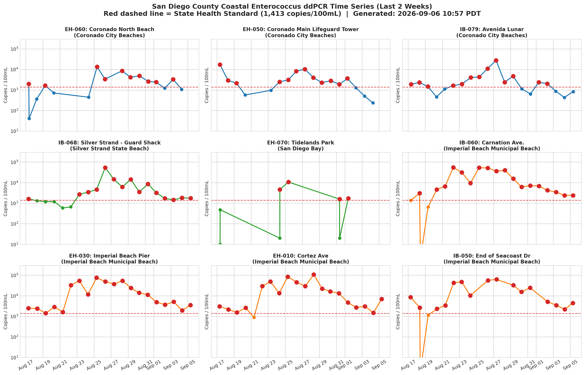
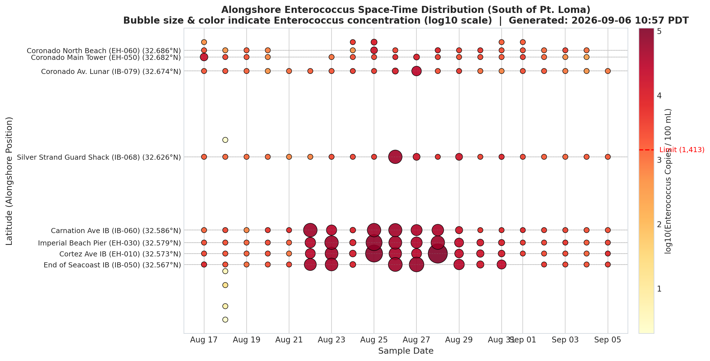

Rapid ddPCR Enterococcus monitoring results from the County of San Diego DEHQ. Advisory threshold: 1,413 copies / 100 mL.
|
San Diego County Coastal Water Quality Monitoring Summary
Generated: 2026-09-06 10:57 PDT
|
||||||||
|---|---|---|---|---|---|---|---|---|
| Station | Location | Beach / Area | Samples | Latest (copies/100ml) | Status | Max | Geom. Mean | Exceedances (>1,413) |
| EH-060 | Coronado North Beach | Coronado City Beaches | 16 | 1,087 (2026-09-04) | Open / Clean | 13,681 | 1,677 | 10/16 (62.5%) |
| EH-050 | Coronado Main Lifeguard Tower | Coronado City Beaches | 17 | 238 (2026-09-04) | Open / Clean | 17,580 | 2,286 | 12/17 (70.6%) |
| IB-079 | Avenida Lunar | Coronado City Beaches | 20 | 845 (2026-09-05) | Open / Clean | 27,680 | 1,980 | 13/20 (65.0%) |
| IB-068 | Silver Strand - Guard Shack | Silver Strand State Beach | 20 | 1,753 (2026-09-05) | Advisory (Exceeds) | 54,298 | 2,988 | 15/20 (75.0%) |
| EH-070 | Tidelands Park | San Diego Bay | 8 | 1,744 (2026-09-01) | Advisory (Exceeds) | 10,821 | 358 | 4/8 (50.0%) |
| IB-060 | Carnation Ave. | Imperial Beach Municipal Beach | 21 | 2,429 (2026-09-05) | Advisory (Exceeds) | 55,212 | 5,602 | 18/21 (85.7%) |
| EH-030 | Imperial Beach Pier | Imperial Beach Municipal Beach | 20 | 3,559 (2026-09-05) | Advisory (Exceeds) | 76,440 | 9,194 | 20/20 (100.0%) |
| EH-010 | Cortez Ave | Imperial Beach Municipal Beach | 20 | 7,035 (2026-09-05) | Advisory (Exceeds) | 109,373 | 9,068 | 19/20 (95.0%) |
| IB-050 | End of Seacoast Dr | Imperial Beach Municipal Beach | 18 | 4,527 (2026-09-05) | Advisory (Exceeds) | 63,584 | 5,921 | 16/18 (88.9%) |


